Window tint, cut clean on the Causeway.
Family owned and owner operated, with 38 years of experience. Cars, trucks, boats, heavy equipment and homes. Rich and Austin walk you through every option and install your film with care.
- Rating
- 4.6 on Google
47 reviews - Experience
- 38 years
Family owned - Film
- American Standard
Window Films - Hours
- Mon–Fri
9 AM–5 PM
Pick a shade. See it on the glass.
The lower the number, the darker the film. Tap a swatch to preview it on a side window and check it against Florida's general tint guide.
Swatches are a screen preview. Rich or Austin will walk you through the real shade levels at the shop.
| Window | FL minimum | This shade |
|---|---|---|
| Front side | 28% | |
| Rear side | 15% | |
| Rear window | 15% | |
| Windshield | Above AS-1 | Top strip only |
15% works on a car's rear side and rear windows. Front side windows need 28% or lighter. This is a general guide (Fla. Stat. 316.2953 / 316.2954). We'll confirm what's legal for your vehicle. Have a medical exemption? We accept them.
Quote this shade 15%What goes on the glass.
Every job uses American Standard Window Films.
-
01
Auto window tint
Cars, trucks, SUVs, Teslas and classics. Ceramic film for side and rear glass, from a light 70% down to a deep 5%. Rich or Austin will walk you through the shade levels before anything is cut. Have a Florida medical exemption? We accept them.
-
02
Windshield film & visor strips
Choose ceramic windshield film in 70% for a clear, glass-like appearance or 35% for a tinted appearance. We also offer visor strips. A visor strip is a band of shade across the top, and it stays above the AS-1 line.
-
03
Boats & charters
Cabin, salon and flybridge glass on boats and charter yachts. Less glare on the water and more privacy at the dock.
-
04
Heavy equipment & fleet
Semi trucks, work vans, heavy equipment and fleet vehicles. Call to set up one truck or the whole fleet.
-
05
Homes & businesses
Window film for home windows, sliding doors and French doors, plus storefronts and offices. Same shop, same care. Call and tell us what you're working with.
- Teslas
- 2022 Bronco
- RAM 1500
- 2002 Trans Am WS6
Recent jobs, straight from the shop.
Corvettes, boats, semis, storefronts and pool doors. Every photo here is a real No Limitz job, shared by the shop.
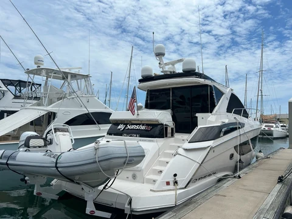
04.01Regal yacht glassBoats 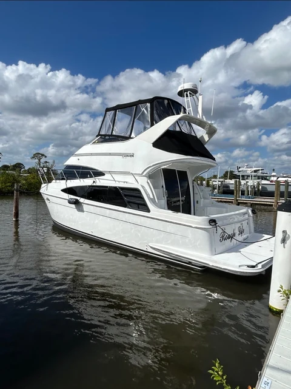
04.02Carver yacht glassBoats 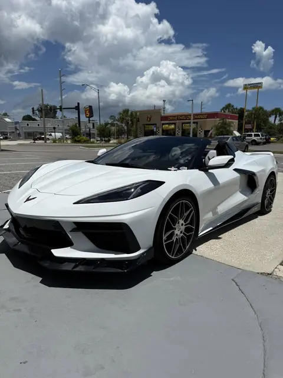
04.03Chevrolet CorvetteAuto 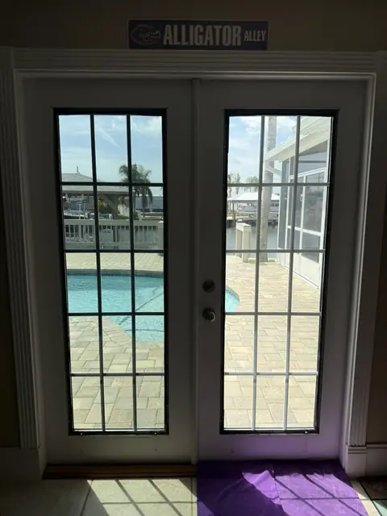
04.04Pool-side French doorsHomes 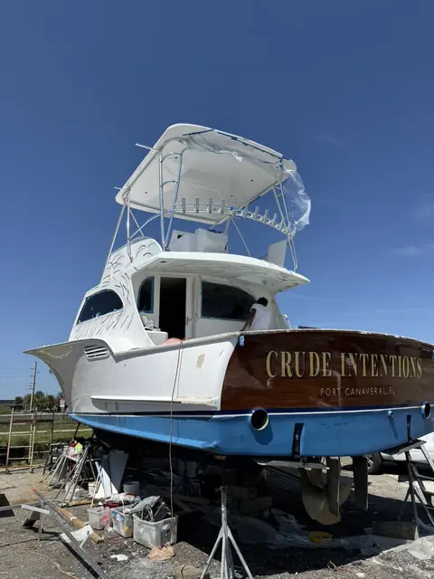
04.05Sportfishing boatBoats 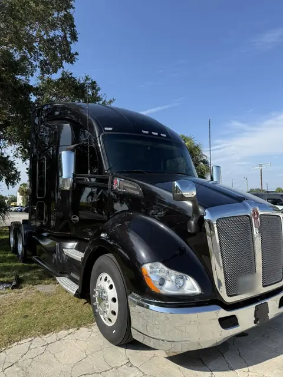
04.06Kenworth semiHeavy 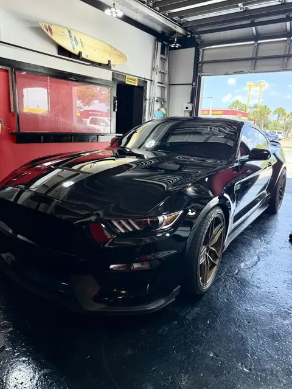
04.07Ford MustangAuto 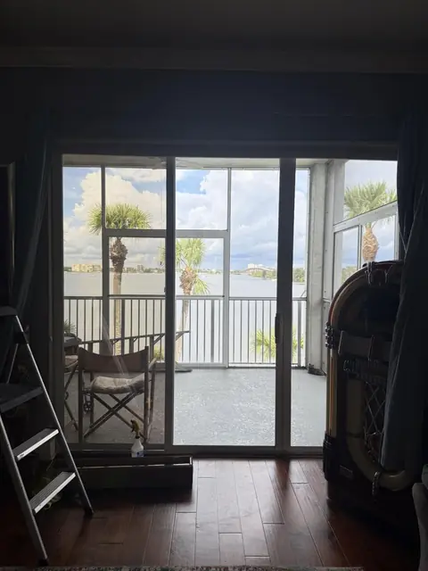
04.08Waterfront slidersHomes 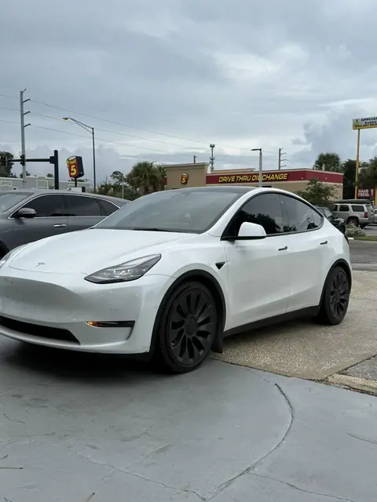
04.09Tesla Model YAuto 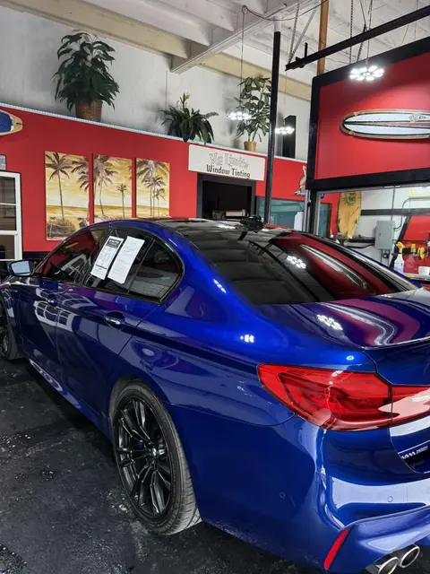
04.10BMW 5 SeriesAuto 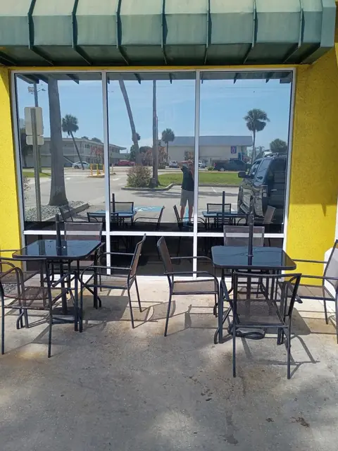
04.11Storefront windowsBusiness 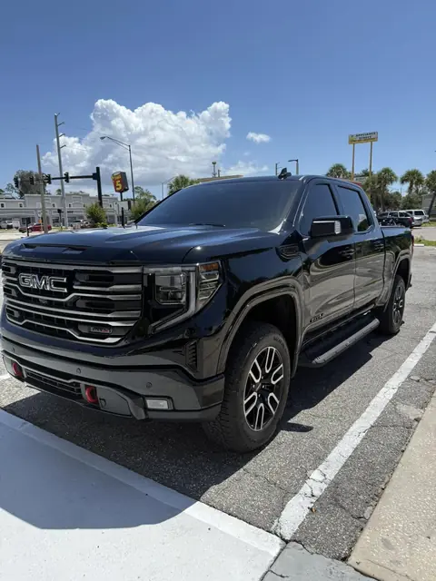
04.12GMC SierraAuto 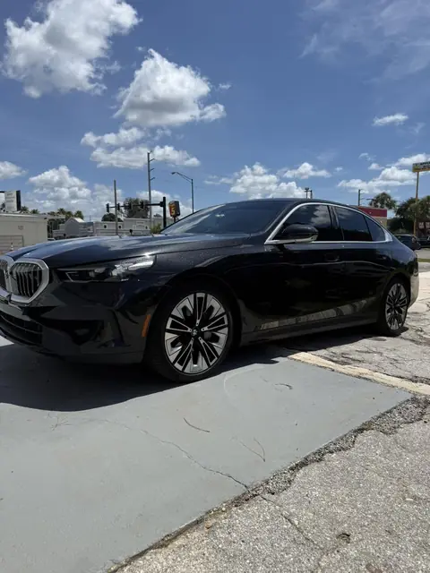
04.13Black BMW sedanAuto 04.14Ford TransitFleet 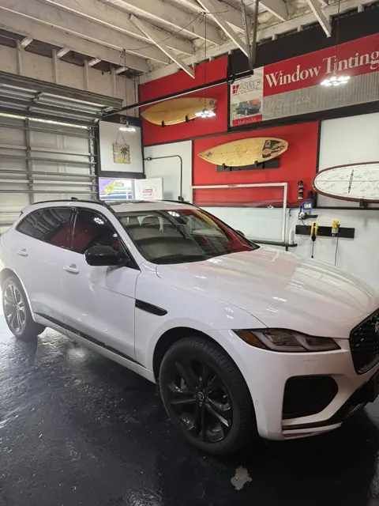
04.15Jaguar F-PaceAuto


Photos: No Limitz Window Tinting
See more on FacebookAsk for Rich or Austin.
No Limitz is family owned and owner operated, with 38 years of tinting experience behind it. Customers mention Rich and Austin by name. What comes up again and again: they take the time to walk you through shade levels, the shop is immaculate, and the price is fair.
“Rich is the GOAT.”
“The shop is immaculate and so is their quality of work.”
Luke S. · Google“Fantastic work and they get it done quickly for a fair price.”
Google review“The prices were very fair, making it a great value for the quality of work.”
Google review“Great work, good price, and friendly service.”
Google review
What reviewers keep saying
- AFlawless work
- BA walkthrough of shade levels
- CAn immaculate shop
- DFair pricing
- EDone in a few hours
- FCare for the vehicle interior
What people ask before they book.
Still not sure? Call the shop at (407) 663-3401, Monday to Friday, 9 AM–5 PM.
01What does No Limitz Window Tinting tint?
Cars, trucks, SUVs, Teslas and classics. Boats and charter boats. Semi trucks, work vans, heavy equipment and fleets. Homes and businesses too. We also do ceramic windshield film in 70% (clear, glass-like appearance) or 35% (tinted appearance), plus visor strips.
02What window film brand do you use?
American Standard Window Films.
03Do you accept medical exemptions for window tint?
Yes. We accept Florida medical exemptions. Bring your exemption paperwork to the shop and we will go over your options.
04How dark can I tint my car windows in Florida?
As a general guide, front side windows must let in at least 28% of light. Rear side and rear windows must let in at least 15% on cars and 6% on SUVs, vans and trucks. Windshield tint must stay above the AS-1 line. This follows Fla. Stat. 316.2953 and 316.2954. We will confirm what is legal for your vehicle.
05Do you do windshield film and visor strips?
Yes. We offer ceramic windshield film in 70% (clear, glass-like appearance) or 35% (tinted appearance), plus visor strips. A visor strip is a band of tint across the top of the windshield, and it stays above the AS-1 line.
06Who owns No Limitz Window Tinting?
No Limitz is family owned and owner operated. The owner has 38 years of window tinting experience. Ask for Rich or Austin at the shop.
07How long does a window tint job take?
Many customers say their car was done in a few hours. Boats, heavy equipment and homes depend on the job, so call and ask.
08Where is No Limitz Window Tinting and when is it open?
265 E Merritt Island Cswy, Unit 113, Merritt Island, FL 32952. Open Monday to Friday, 9 AM to 5 PM. Closed Saturday and Sunday. Call (407) 663-3401.
On the Causeway, Unit 113.
265 E Merritt Island Cswy, Unit 113Merritt Island, FL 32952
Hours
| Monday | 9 AM–5 PM |
|---|---|
| Tuesday | 9 AM–5 PM |
| Wednesday | 9 AM–5 PM |
| Thursday | 9 AM–5 PM |
| Friday | 9 AM–5 PM |
| Saturday | Closed |
| Sunday | Closed |
Tell us about the glass.
A few quick questions. Rich or Austin will get back to you with a quote. Faster still: call the shop during business hours.
Call(407) 663-3401